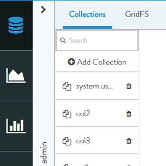
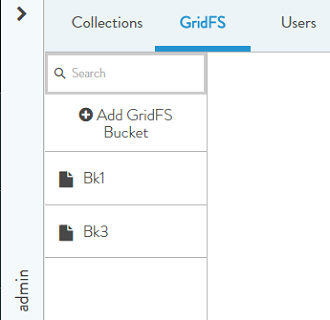

Search Filter
The Search Filter enables user to search DB, Collection, GridFs and Users in their respective lists. Just type the name in the search box and results are filtered as per your search.
The Search Filter bar is displayed on top of each list. See figure below.
DB

Collection

GridFS

Users